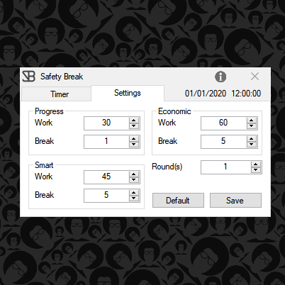
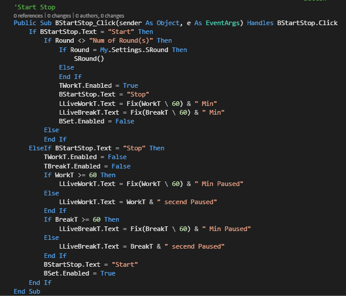
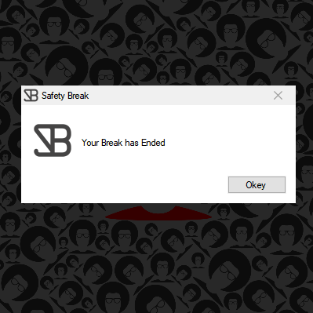
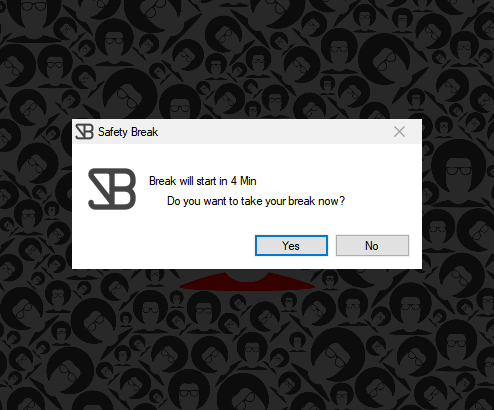
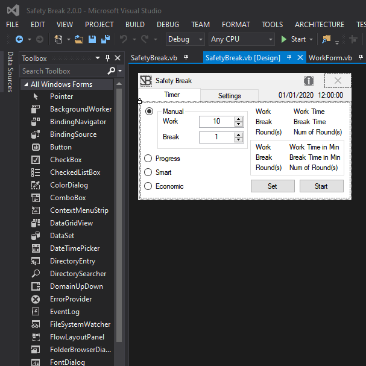

Safety Break


About
Safety Break was made as an easier way to manage stretch break from the desk. which not only decreases the chances of work-related stress and RSI injuries, also increases productivity and helps workers to step back and reorganize thoughts. by decreasing the number of injury workers you will achieve an overall happier workplace witch will increase better long term productivity.SB was made for fast and easy use. the setting tab is an easy way to optimizes the options to suit your workflow, by changing the number of rounds you can plan your upcoming hours.

This is code to display a live countdown of the break in the break popups.
Private Sub TReferash_Tick(sender As Object, e As EventArgs) Handles TReferash.Tick
If SafetyBreak.WorkT >= 60 Then
LLWorkT.Text = Fix(SafetyBreak.WorkT \ 60) & " Min"
ElseIf SafetyBreak.WorkT > 1 Then
LLWorkT.Text = SafetyBreak.WorkT & " secend"
ElseIf SafetyBreak.WorkT <= 1 Then
LLWorkT.Text = "Ended"
Me.Close()
End If
End SubThe Safety break is a complete app that is ready to be used for personal use. SB was developed with VB.NET. the development of this project will be continued in other languages and platforms.
- This is a stable version last update 07/02/2020.
Photos

Start and Stop button after click

Break timer popup window

5 minutes, before break warning window

Layout design preview